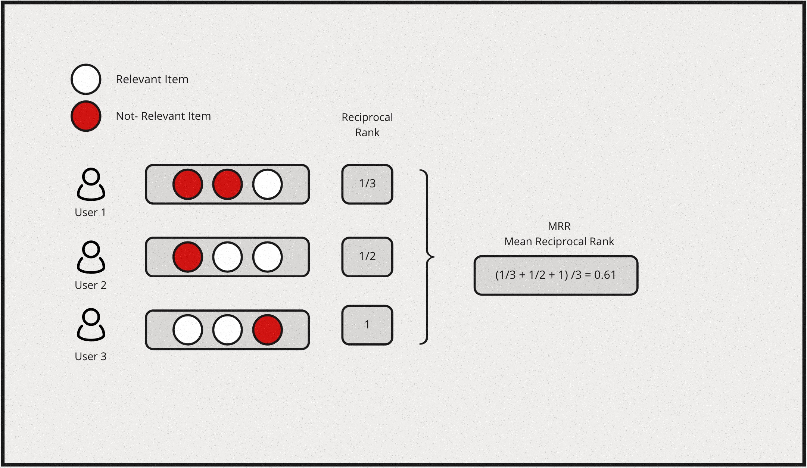
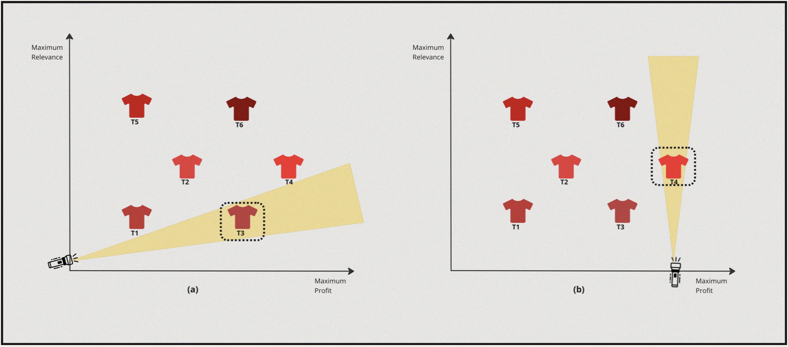

The Backdrop
It took humans less than a decade to reach a level of sophistication to reach a stage where with less than a couple of keystrokes on a phone one could get the most elaborate meal delivered at home. That’s the magic of the internet revolution. In recent times this trend has only gotten sharper and sharper, with the on-demand delivery space heating up, an Indian consumer can receive anything from an egg to the most lavish dinner faster than it takes to respond to a slack message.
In fact, as of 2022 you can get most things delivered under 10 minutes! The implication of this is that the customers do not need to plan anything much in advance and that the time between desire, action, and gratification has shrunk to almost zero. One such Hypothetical unicorn startup in this space is Hyper - Which started over two years ago and has seen massive growth in a short period. Hyper is known mainly for its super fast, sub-10-minute delivery of almost anything that one can think. However, In the past couple of weeks, the sentiment trends around sub-10-minute style deliveries has been sharply negative due to various factors. Especially concerned around the lack of empathy towards Hyper’s delivery partners. What was once a strength seems to be turning into pain for the company. Many are asking if we have gone too far.
Within this Hypothetical backdrop where Hyper is reevaluating its business strategy, Hyper’s engineering team set’s forth on a journey to contribute towards its initiative of bringing a bit more balance within the marketplace. This marketplace is not overly user-centric but is also fair for other stakeholders like delivery partners. Enter recommendation systems, systems that sit at the heart of how most digital marketplaces perform. Most digital economies are shaped by these systems. The scale, convenience, and speed of marketplaces like Hyper are enabled by recommendation systems and search engines. Hence, what these systems optimize for and how they behave are of critical importance. Within a marketplace, multiple factors come into play, and the success of any given marketplace is closely tied to how you match, cater & satisfy the requirements of all the stakeholders like the consumers, suppliers, and more. In a series of articles, let’s dive deeper into how these systems are designed, optimized and explore the inner workings and learn how some parts of these systems are built in practice.
But first, let’s establish a couple of definitions, terms & concepts.
Introduction
At the core of any recommendation system, there would be something like a collaborative filtering model (matrix factorization or tensor factorization), latent variable model, neural embeddings-based model, or Neural Collaborative filtering models, and these systems would come in one of these variants - Short vs Long term recommendations, cold start & cohort-based, Multi view and multi-interest models or multi-task recommendations. The most common trend in all these systems usually would be that they all are focused on delivering single user-centric recommendations. These systems were designed to address concerns around user needs, behavior, interests, interactions & personalization. Further, they are measured on user engagement-oriented metrics.
But, caring only about a single user type, might not yield the most optimal outcome especially when there are many stakeholders involved within a platform - aka recommendation systems within a marketplace-type setting could not be designed with a single entity in mind. This is where the need for a recommendation system that caters to different stakeholders with different sets of interests arises.
Hence, Recommendations in marketplaces are multi-sided. Equipped to cater not just to a single user’s (aka buyer) needs, but also the supplier’s needs & most often they also have to consider platform economics within the play. Such a system is usually designed with many objectives in mind - some of these objectives are User expectations, user understanding, supplier exposure, supplier goals, platform objectives, and long-term value.
Now let’s further look into these different stakeholders, their objectives & the interplay between these objectives that usually arise within this ecosystem.
Stakeholders, Objectives & the Objective interplay
In a multi-sided system with multiple objectives often the objectives interact and behave in different manners. At a high level, you could categorize the different types of these interplay as follows:
- Correlated : Optimising for one objective helps the other.
- Neutral: Optimising for one does not impact the other
- Anti Correlated: Optimising for one hurts the other
Consider the example of our Hypothetical on-demand delivery startup Hyper, which is a three-sided marketplace - i.e it has three sets of stakeholders with different motivations & objectives.
| Stakeholder | Needs/Motivations | Potential Objectives |
|---|---|---|
| End User | Wants to order something from local partner shops. |
|
| Merchants | Provide online visibility and find customers. |
|
| Delivery Partners | Earn a stable livelihood. |
|
As we see above each entity has a unique set of potential objectives one could optimise the recommendation system for & this has to be done in a deliberate and careful way or it might result in undesired outcomes.
In short, what a system optimizes for is super important & in general, it needs to look for a balance while optimizing for various objectives.
Before we proceed further on how to optimize for multiple objectives let us quickly revisit and see how most modern recommendation systems are built. Also, let’s do a quick recap of how one builds a ranking model (aka Learning to rank) & some important metrics used for measuring these systems.
A Quick Recap on modern recsys

Over the past few years, a common and central design pattern has emerged around how most industrial recommendation systems are designed. If one were to summarise this design pattern, it would appear as described in the above figure - consisting of 4 stages. Let us take a brief look at the functionality of these four stages:
Candidate retrieval
The Retrieval & filtering stages usually are collectively referred to as candidate generation. A fast but coarse step which narrows down the search space of items from millions of candidates for a given query to something in the order of 100s.
Often this is achieved by an initial retrieval with some form of matching between the query and the catalog.Usually, via an ANN, Graph-based approach, or some form of a decision tree. Followed by a filtering stage, where invalid candidates are removed from the initial retrieval before passing on to the next stages.
Ranking
At this phase, we further narrow the initial set of items into a much smaller list to be presented to the user. Which is a slow but more precise operation - this stage is usually modeled as an LTR or a classification task. Further, sometimes it’s followed by an ordering stage which handles various business logic to reorder/sort the final list of items. Some common examples of this business logic include: organizing recommendations to fit genre distributions in streaming services or promoting specific segments of sellers as in the case of e-commerce.
A Quick Recap on Learning to Rank
Learning to rank (LTR) refers to a class of ML techniques for training a model to solve the task of ranking a set of items. Usually, this is formulated as a supervised or sometimes semi-supervised task.
Generally, this means we try to learn a function \(f(q, D)\) given a query \(q\) & a list of documents \(D\) to predict the order/rank of the documents within this list. Depending on how the loss function is formulated in the underlying task, any LTR algorithm can be classified into 3 distinct categories:
- Pointwise method
- Pairwise method
- Listwise method
Ranking Task
Given a query \(q\), and a set of \(n\) documents \(D=d_1,d_2,...,dn\), we’d like to learn a function \(f\) such that \(f(q, D)\) will predict the relevance of any given document associated with a query.
Pointwise method
In pointwise method, the above ranking task is re-formulated as a standard classification/regression task. The function to be learned \(f(q, D)\) is simplified as \(f(q, d_i)\) i.e the relevance of each document given a query is scored independently.
For instance, if we have two queries associated with 2 and 3 resulting matched documents:
- \(q_1 \to d_1, d_2\)
- \(q_2 \to d_3, d_4, d_5\)
Then the training data \(x_i\) in a pointwise method will essentially be every query-document pair as follows:
- \(x_1 : q_1, d_1\)
- \(x_2 : q_1, d_2\)
- \(x_3 : q_2, d_3\)
- \(x_4 : q_2, d_4\)
- \(x_5 : q_2, d_5\)
Since each document is scored independently with the absolute relevance as the target label, the task is no different from any standard classification or regression task. As such any standard ml algorithms can be leveraged in this setting.
Pairwise method
In pairwise method, the goal is to learn a pointwise scoring function \(f(q, d_i)\) similar to a pointwise formulation. However, the key difference arises in how the training data is consructed - where we take pairs of documents within the same query as training samples.
- \(x_1 \to q_1, (d_1, d_2)\)
- \(x_2 \to q_1, (d_3, d_4)\)
- \(x_3 \to q_1, (d_3, d_5)\)
- \(x_4 \to q_1, (d_4, d_5)\)
In this setting, a new set of pairwise binary labels are derived, by comapring the individual relevance score in each pair. For example, given the first query \(q_1\), if \(y_1==\) (i.e.. an irrelevant document) for \(d_1\) & \(y_2=3\) (i.e.. a Highly relevant document) for \(d_2\) then we can create a new label \(y_1<y_2\) for the pair of docs \((d_1, d_2)\) - by doing so we have essentially converted this back to a binary classification task again.
Now in order to learn the function \(f(q, d_i)\) which is still pointwise, but in a pairwise manner, we model the difference in scores probablistically as follows:
\[P(i>j) \equiv \frac{1}{1+exp^{-(s_i - s_j)}}\]
i.e, if document \(i\) is better matched than document \(j\) (denoted as \(i>j\)), then the probability of the scoring function to have scored \(f(q, d_i) = S_i\) should be close to 1. In other words, the model is trying to learn, given a query, how to score a pair of documents such that a more relevant document would be scored higher.
Listwise method
Listwise methods, solve the problem of ranking by learning to score the entire list jointly and they do so via two main sub techniques:
- Direct optimization of IR measures such as NDCG.(Eg: SoftRank, AdaRank).
- Minimize a loss function that is defined based on understanding the unique properties of the kind of ranking you are trying to achieve. (E.g. ListNet, ListMLE).
Let’s do a quick review of one of these approaches:
Consider ListNet, Which is based on the concept of permutation probability of a list of items. In this case we assume there is a pointwise scoring function \(f(q,di)\) used to score and rank a given list of items. But instead of modeling the probability as a pairwise comparison using scoring difference, we model the probability of the entire list of results. In this setting our documents and query dataset would appear like this:
- \(x_1 : q_1, (d_1, d_2)\)
- \(x_2 : q_2, (d_3, d_4, d_5)\)
First let’s look at the Permutation probability. Let’s denote \(π\) as a specific permutation of a given list of length \(n\), \(\Theta (s_i) = f(q, d_i)\) as any increasing function of scoring \(s_i\) given a query \(q\) and a document \(i\). The probability of having a permutation \(π\) can be written as follows:
\[P(\pi) = \prod_{i=1}^n \frac{\phi(s_i)}{\sum_{k=i}^n\phi(s_k)}\]
To illustrate consider a list of 3 items, then the probability of returning the permutation \(s_1\),\(s_2\),\(s_3\) is calculated as follows:
\[P(\pi = \{s_1, s_2, s_3\}) = \frac{\phi(s_1)}{\phi(s_1) + \phi(s_2) + \phi(s_3)} \cdot \frac{\phi(s_2)}{\phi(s_2) + \phi(s_3)} \cdot \frac{\phi(s_3)}{\phi(s_3)}\]
Due to computational complexity, ListNet simplies the problem by looking at only the top-one probability of a given item. The top-one probability of object i equals the sum of the permutation probabilities of permutations in which object i is ranked on the top. Indeed, the top-one probability of object i can be written as:
\[P(i) = \frac{\phi(s_i)}{\sum_{k=1}^n \phi(s_k)}\]
Given any two list of items represented by top-one probabilities, we can now measure the difference between them using cross entropy. Then we can use an ml algorithm which minimises that cross entropy. The choice of function \(ϕ(⋅)\), can be as simple as just an exponential function. When \(ϕ(⋅)\) is expotential and the list length is two, the solution basically reduces to a pairwise method as described earlier.
With that brief introduction out of the way, let’s also quickly look at the advantages and disadvantages of each of these approaches:
| Method | Advantages | Disadvantages |
|---|---|---|
| Pointwise |
|
|
| Pairwise |
|
|
| Listwise |
|
|
A Quick Recap on Ranking Evaluation metrics
Over the years, Several metrics have been proposed and widely used for evaluating a ranking model. If we were to summarise them and list the most popular metrics it boils down to this:
| Metric Type | Metric |
|---|---|
| Binary Relevance | Mean Average Precision (MAP) |
| Binary Relevance | Mean Reciprocal Rank (MRR) |
| Graded Relevance | Normalized Discounted Cumulative Gain (NDCG) |
| Graded Relevance | Expected Reciprocal Rank (ERR) |
In general, binary metrics only consider relevant & irrelevant items, while graded metrics consider the ranking among relevant items. The degree of relevancy matters in this case when scoring a list of items.
Mean Average Precision (MAP)
MAP is a measure based on binary label of relevancy. To compute this first we define precision at k for a given query \(P@k(q)\) as:
\[P@k(q) \equiv \frac{\sum_{i=1}^k r_i}{k}\]
for an ordered list of prediction \(r_i\) for all \(k\) items. \(ri=1\) if it is relevant and 0 otherwise.Then we define the average precision given a query \(AP(q)\) at \(k\) items as:
\[AP(q)@k \equiv \frac{1}{\sum_{i=1}^k r_i} \sum_{i=1}^k P@i(q) \times r_i\]
Mean Average Precision is just the mean of \(AP(q)\) for all queries:
\[MAP \equiv \frac{\sum_{q=1}^Q AP(q)}{Q}\]
Also, MAP is an order sensitive metric because of the term \(r_i\) in the calculation of AP. It is essentially taking the average of precision at each ranking position and penalizing the precision at positions with irrelevant item by strcitly setting them to zeroes.
Here is a simple example for computing MAP:

Mean Reciprocal Rank (MRR) & Expected Reciprocal Rank (ERR)
Reciprocal rank metrics focus mainly on the first correctly predicted relevant item in a list. Given a list of items, and say \(r_i\) is the rank of the highest ranking relevant item & if the the 2nd item is the first relevant item in the list, then the reciprocal rank for this query would be \(\frac{1}{2}\). By extension, each query will have a reciprocal rank. Hence, Mean reciprocal rank is essentially the average of reciprocal rank for all the queries, which would be represented as follows:
\[MRR \equiv \frac{1}{Q} \sum_{i=1}^Q\frac{1}{r_i}\]
Expected reciprocal rank tries to quantify how useful a document at rank \(i\) conditioned on the degree of relevance of documents at rank less than \(i\) are. The intution behind this is based on the empirical findings from web search task, that the likelihood a user will examine the document at rank \(i\) is dependent on how satisfied the user was with previously observed documents in the list.
Lets assume the probability of a user finding the result is satisfied at position \(i\) in a list of items is denoted as \(R_i\) & the likelihood of a session for which the user is satisfied and stops at position \(r\) is: \[\prod_{i=1}^{r-1}(1 - R_i)R_r\]
Now we can model \(R_i\) such that it is an increasing function of relevance:
\[R = R(g) \equiv \frac{2^g - 1}{2^{g_{max}}}\]
where \(g\) is the graded relevance such that \(g \in \{0, 1, ..., g_{max}\}\) & \(g = 0\) implies an irrelevant document and \(g = g_{max}\) implies a relevant document.
Now we can define ERR as follows:
\[ERR \equiv \sum_{r=1}^n\frac{1}{r}R_r\prod_{i=1}^{r-1}(1-R_i)\]
Here \(\frac{1}{r}\) is treated as a utility function \(\tau(r)\) that satisfies \(\tau(1) = 1\) and \(\tau(r) \rightarrow 0\) as \(r \rightarrow \infty\).
Note that ERR is a metric on a list with a single query, To evaluate results from multiple queries, we will need to further average ERRs among queries.
Here is a simple example for computing MRR:

Normalized Discounted Cumulative Gain (NDCG)
Normalized Discounted Cumulative Gain (NDCG) is one of the most popular metric for measuring the quality of a set of ranked items in search or recommendations. If we were to break the assumptions made by this metric in simple terms, it would be as follows:
- Cumulative Gain: Very relevant items are more useful than somewhat relevant items which are more useful than completely irrelevant items.
- Discounting: Relevant items are more useful when they appear earlier in a list of ranked items.
- Normalization: The ranking results should be irrelevant to the query performed.
Let’s define Discounted Cumulative Gain at position \(k\) as follows:
\[DCG@k \equiv \sum_{i=1}^k\frac{2^{l_i} - 1}{log_2(i + 1)}\]
where \(l_i\) is the grading of relevance at rank \(i\). Intutively, the numerator is simply an increasing function of relevance, the more relevant the higher. This is the gain from each item. The denominator is a decreasing function of ranking position, this is the discounted component of the metric. Collectively, higher relevance gains more score, but the lower it is ranked the higher also the discount. Essentially, the metric will prefer higher relevant item to be ranked higher, which is the desired outcome.
NDCG is then defined as:
\[NDCG@k = \frac{DCG@k}{IDCG@k}\]
where \(IDCG@k\) is the Ideal DCG@k given the result. DCG@k is calculated by sorting the given list of items by its true relevance labels. and IDCG@k is the maximum possible DCG@K value one can get given a ranked list of items.
Here is a simple example for computing NDCG:

Learning to rank with Multiple Objectives
MOO - The What, The Why & The How.
After that long detour, let’s now look into Multiple Objective Optimisation applied to Ranking problem within a marketplace setting involving multiple stakeholders. Let’s do so with a simple illustrative example that involves similar item recommendations. Specifically, let’s understand Why this is needed first.
Picture this, A User has browsed and explored a bunch of different red shirts they are planning to buy, and on one such open tab we’ve got a shirt that they are closely examining. Now, the recommendation system in the backend is also generating a bunch of similar shirts that they might be interested to explore. Let’s say the recommendation system is optimising for two different objectives - firstly, to show relevant and personalised shirts similar to their style based on interaction history. Secondly, the platform also wants to make sure it’s making a good profit on each sales that the recommendation system generates or leads to. Hence, they would also want to promote shirts with good porfit margin. How would we do this?
Let’s start by defining our objectives:
| Objective I | Objective II |
|---|---|
| Personalisation | Price Margin |
Let’s also say the item options available to us to be displayed (let’s focus on finding the top-1 item at the moment.) if plotted on a graph look something like this:

Now, essentially we want to maximise profit margin but also we want to maximise for highly personalised & relevant shirt. If we were to solve this from a lens of single objectve optimisation two scenarios would arise:
Case-I: Applying 1D Optimisation to objective I followed by optimising for objective II, i.e First we can find Highly Personalised shirts and then search for the shirt that also provides maximum margin.
Case-II: Applying 1D Optimisation to objective II followed by optimising for objective I, i.e First we can find High Profit margin shirts and then search for the ones which are also Highly Personalised & relevant for the user’s style.
For a simple and better understanding of the concept, assume that someone is trying to find the best red shirt from both the perspectives manually in a physical store, and let’s further also assume its a dark room.
Case I : Highly Personalised & High Profit margin
- So, in this case the solver turns the torch on towards the relevance axis and discovers \(T5\) as the most suitable candidate.
- Now from this point the solver turns towards the profit axis and turns the torch on and discovers \(T6\).
Case II : High Profit margin & High Personalisation

- In this case the solver turns the torch on towards the profit axis and discovers \(T3\) as the best candidate.
- Now from this point the solver turns towards the relevance axis and turns the torch on and discovers \(T4\).
What do we have as of now:
| Process | 1st Optimization Objective | 2nd Optimization Objective | Optimal Solution |
|---|---|---|---|
| 1 | Personalisation | Profit Margin | \(T6\) |
| 2 | Profit Margin | Personalisation | \(T4\) |
So, that seems odd. There are multiple solutions. Depending on what we want to achieve- If we want to optimize for both objectives and find the best solution, Going about in the above method is not the best way. Instead, we need to optimize to find solutions for both objectives collectively. The set of optimization methods that enables this is called Multiple Objective Optimization.
Let’s define what MOO is & try to understand some other key concepts associated with it.
Popular methods applied to LTR Setting.
Over the years, numerous approaches have been applied in LTR settings. Broadly most of these approaches can be classified into four categories as follows:
- Label Aggregation
- Constraint Optimization
- Model Fusion/Aggregation
- Lexicographic
Now, lets us define these approaches.
Label Aggregation
In this method, we combine all objective functions to form a single objective function which is then minimized. Once we convert the multi-objective into a single objective by combing the labels, we solved the given LTR problem as the single objective function. Let’s say for given query q, and products P, we have two different labels, \(ℓ_1(q,p)\) a similarity score between query and prodct, and \(ℓ_2(p)\) a profit margin for a product, we can put a new label as \(ℓ(q, p) = \alpha·ℓ_1(q, p) + (1 − \alpha)·ℓ2(p)\)
Note: Here \(\alpha\) is manually chosen by the user. If \(\alpha \in \{0,1\}\), the problem is reduced to a single objective optimization.
In general, given k objectives rank function looks like below:
Minimise,
\[f(x) = \sum_{i=1}^k{\alpha_i * f_i(x)}\]
Subject to \[\sum_{i=1}^k{\alpha_i = 1}\]
Advantages
- It gives a clear interpretation of the multi-objective function and generalize it.
- It allows multiple parameters to be set to reflect preferences.
Disadvantages
- It tries to optimize for each objective function, which can be computationally expensive.
- The setting of parameters \((\alpha_i)\) is not intuitively clear when only one solution point is desired.
Constraint Optimization
This method optimizes the single most important objective \(f_{primary}(x)\) and treat the other objectives as constraints with pre-determined upperbound. As we saw eariler, let’s say have two objectives to optimize. First objective is \(ℓ_1(q,p)\) - similarity score between \((p,q)\) and second \(ℓ_2(p)\) - profit margin for \(o\). Then we could consider \(ℓ_1(q,p)\) as primary objective and \(ℓ_2(p)\) as secondary objective. In this method we will optimize for primary objective \(ℓ_1(q,p)\) subject to \(ℓ_2(p) \lesssim \epsilon\).
In general, given k objectives the ranking function is as follows:
\[ \min_{\forall x_i} f_l(x)\]
Subject to \[ f_i(x) \lesssim \epsilon_i, \forall i \not = l ,\] \(\epsilon_i\) is upperbound for \(f_i(x)\). And, \(f_l(x)\) is the primary function to optimize.
Advantages
- It focuses on a single objective with limits on others.
- It always provides a weakly Pareto optimal point, assuming that the formulation gives a solution.
- It is not necessary to normalize the objective functions.
Disadvantages
- The optimization problem may be infeasible if the bounds on the objective functions are not appropriate.
Model Fusion/Aggregation
This method is an aggregation of multiple independent ranking models. The final ranking socre is obtained by a convex combination of multiple models. As we saw earlier if we have two objectives, let’s say \(ℓ_1(q,p)\) - similarity between query and product and \(ℓ_2(p)\) - profit margin. Then first we train the \(M_{l1}\) model which optimizes for similarity score between (q,p). And further we also independently train another model \(M_{l2}\) which optimizes for the profit margin. The linear combination of the models can be formulated as \(M(q,p) = \alpha·M_{l1}(q, p) + (1 − α)·M_{l2}(p)\), where the hyperparameter \(\alpha \in[0, .,., 1]\) controls the tradeoff between the two model scores.
In general, given k objectives the ranking function looks as follows:
\[M(x) = \sum_{i=1}^k (\alpha_i * M_i (x))\]
where, \(M_i(x)\) is an independently trained model for optimizing \(i^{th}\) objective.
Advantages
- This is used as a post-rank method, and as such easy to tweak weighting parameters.
- Learning for one single objective will not be affected by other objectives (decoupled objectives).
Disadvantages
- It’s difficult to find the optimal weight for the final ranking.
Lexicographic
When we have more than one objective, we rank the items by ordering the objective functions according to their importance. As mentioned earlier, we have two objective functions, \(ℓ_1(q,p)\) similarity between query and product as pprimary objective and \(ℓ_2(p)\) profit margin as the secondary objective. Then We will order the items according to the primary objective \(ℓ_1(q,p)\) and if a tie happens, then we use \(ℓ_2(p)\) the secondary objective score to break the tie.
In general, given k objectives, the rank function looks like below:
Minimise,
\[ f_i(x)\]
Subject to \[ f_j(x) \lesssim f_j(x_j^*)\] \(j = 1\) to (\(i - 1\)) and \(i > 1\) ; \(i = 1\) to \(k\)
Here, we rank the function based on \(f_i\), and where a tie occurs we break the tie based on \(f_{(i+1)}\) score.
Advantages
- It is a unique approach to specifying preferences.
- It does not require that the objective functions be normalized.
Disadvantages
- It requires that additional constraints be imposed.
- It is computation heavy if we have more objectives.
Few Examples in the Wild
A Multi-Objective Learning to Re-Rank Approach to Optimize Online Marketplaces for Multiple Stakeholders.
First, let’s look at an example from Expedia. Being a service provider they are trying to optimize for the following objectives:
- Consumer’s Conversion Rate or Click Through Rate.
- Maximum transaction commission from the supplier.
A supplier pays a marginal amount of the sales transaction as a commission to the platform. Let’s say the product’s cost is \(c\) and the selling price is \(p\) then the margin is \(m = p-c\).
To achieve the above objectives, the optimization function is defined as follows:
\[\max_{\alpha, \beta}L(m|u) = \sum_{i=1}^n \log(u_i) + \alpha \log(p_i) + \beta \log(\frac{m_i}{p_i})\]
where \(\alpha\) and \(\beta\) are tuning parameters.
\(\log(u_i)\) = User possibility to do transaction.
\(\log(p_i)\) = supplier interest for selling the product at price \(p\).
\(\log(m/p)\) = profit margin define as percentage here.
In these objective functions, we have contradictory relations with suppliers and consumers by nature. On the other side, service providers want higher commission benefits from suppliers at an indirect cost to consumers. For such problems, there is no unique Pareto optimal solution because of the complex and opposing interactions of the different stakeholder interests.
Here they give priority to promoting items to higher positions that better satisfy a transaction commission objective while staying as close as possible to the original ranking. The new ranking score function looks like the below:
\[ \forall_u \in u, u^{′} = u + \alpha\log(p) + \beta(x,m)\log(\frac{m}{p})\]
To reduce the distance between the new vs old score vectors, they use the Kendall tau correlation measure. The updated objective function looks like the below:
\[\min_{\alpha, \beta}L(m|u, X) = L_r(\frac{m}{X}) + \gamma(1 - K^{'}(u, u^{′})) \]
Here, \(K^{'}(u, u^{'})\) is playing the role of a similarity-based regularizer with the original ranking order u being the reference point to the new ranking order \(u^{′}\). The hyperparameter \(\gamma\) gives the balance between our objective function.
To evaluate the LTR method, they use an in-house Expedia dataset built from worldwide hotel searches collected during 2016. The new ranking methods give a lift‰ of +16.7% on the NDCG of margin, but at the same time, this incurs a decrease of -5.9% in terms of the NDCG of customer preferences.
The paper also uses the following formula to calculate the risk and reward to further evaluate the new objective function:
\[ Risk = \frac{1}{|q|} \sum_q NDCG@10(LRR) < NDCG@10(Baseline)\]
\[ Reward = \frac{1}{|q|} \sum_q NDCG@10(LRR) > NDCG@10(Baseline)\]
They have found that the risk is lower than the baseline and the reward much higher.
This experiment shows that multi-objective is always a trade-off between the two objectives: Conversion rate vs Margin. They would like to further test with real-world performance via \(A/B\) testing.
Joint Optimization of Profit and Relevance for Recommendation Systems in E-commerce
Traditionally, e-commerce-based recommendation systems focus on optimizing for relevance by predicting the purchase or click probability of an item. The relevance-centric approach is capable to increased the conversion rate but does not guarantee a maximum profit for either a platform or seller. In this paper from Etsy, where they discussed a novel revenue model, which optimizes for two objectives:
- Maximising the Revenue
- The probability of the purchase.
To maximize the likelihood, the objective function is defined as follows:
\[\max_{w \in R^n, b \in R} l(w,b) := - \sum_{i=1}^{m} \log(1 + exp(-y_i(w^T x_i + b)))\]
Here, \(x_i\) = \(i^{th}\) training sample \(x_i \in R^n\) \(y_i\) = label whether a recommended item is purchased or not
Let’s say \(\pi_i\) is the price of item, then the objective function for maximizing profit is as below:
\[ρ(w,b) := \sum_{i=1}^{m} E[\pi_i, y_i] = \sum_{i=1}^{m} \pi_i (2prob[y_i = 1|x_i;w] - 1)\]
\[= \sum_{i=1}^{m} 2\pi_i\sigma(w^T x_i + b) - \pi_i,\]
The combined objective function will be:
\[\max_{w\in R^n, b\in R } l(w,b) + \mu ρ(w,b)\]
To optimise the above objective, \((w,b)\) parameters need to be found which can fit \(l(w,b)\) to maximise the likelihood while maximizing the expected revenue (via \(ρ(w, b)\)). Here, \(\mu ≥ 0\) is a hyperparameter of the model that controls the tradeoff between the two objectives. Once the optimal parameters are learned, they use them to rank a set of candidate items.
They have used the following metrics to evaluate the performance of the proposed model
- Profit@K: profit generate by kth highest ranked item
- Average price: Average price of the k highest ranked item
- AUC: to measure relevance
- NDCG@5
Etsy has done an offline evaluation of the proposed model. They found the proposed revenue model attains the highest AUC and profit@k for all K values. Note they used K value up to 3. They observe that the revenue model has a 3.57% increase in AUC and 9.50% in profit@1 compared to the baseline model. Also increases P-NDCG@k and AP@k for all k by at least 3.57% and 23.08% However, the proposed model results in a 10.76% and 16.06% decrease in AUC compared to the baseline.
The overall revenue model can increase profit for the platform while retaining high relevancy for users. They would like to assess revenue model performance in the face of real user traffic via an online A/B experiment.
Using Bayesian optimization for balancing metrics in recommendation systems
Let’s now look into an article from Linkedin where they describe their approach towards building their notifications recommendation system, which notifies members about various activities within their network. To build an efficient notification system, they are optimizing for the following objects:
- CTR
- Number of sessions (i.e the user visits & app open rate)
The CTR and session objectives can be conflicting, because sending more notifications to members may lead them to visit an app frequently. And It increases the overall number of sessions but on the other side, it can decrease CTR because of the quality of the notification.
The overall objective function they define is as follows:
\[p_{click} + \alpha * \Delta p_{visit} > \gamma\]
where,
- \(p_{click}\) is the probability of click by member
- \(\Delta p_{visit}\) can be defined as \(p(\frac{visit}{sent})\) - \(p(\frac{visit}{not sent})\). Which is basically the difference between sending a notification now vs not sending a notification.
- \(\alpha\) is the hyperparameter that measures the relative importance of the two utilities.
- \(\gamma\) is the threshold applied.
Finding an optimal value of \(x=\{\alpha,\gamma\}\) can maximize the sessions without compromising on CTR and send volume. To ensure the overall performance, they used \(c1\) and \(c2\) constraints as contained for CTR(x), and Send Volume(x).
The updated objective function looks like the below:
\[ \max_{\forall x_i} , f_{session}(x)\]
Such that, \[f_{CTR}(x) > c_1, f_{sentVolume} (x) < c_2\]
Using the above constraints, they define a single objective function as below:
\[\max_x f(x) = f_{session}(x) + \lambda(1 \{f_{CTR}(x) > c_1 \} + 1\{f_{sentVolume(x)} < c_2\}),\]
By converting a MOO into SOO using constrained-based optimization, they learn global hyperparameters (i.e., a single value) for all members. Further, they evaluate and improve upon this via online A/B experiments.
Conclusion
Reference
- Multi-objective Ranking via Constrained Optimization
- Multi-Objective Ranking Optimization for Product Search Using Stochastic Label Aggregation
- Price and Profit Awareness in Recommender Systems
- Measuring the Business Value of Recommender Systems
- Multi-objective ranking using Constrained Optimization in GBTs
- Multi-Objective Ranking for Promoted Auction Items
- Recommender Systems, Not Just Recommender Models
- Automated Demand Shaping Guaranteeing View Share
- Why nobody is talking about 10-minute deliveries anymore
- A Survey on Modeling and Optimizing Multi-Objective Systems
- Personalizing Similar Product Recommendations in Fashion E-commerce
- Towards Recency Ranking in Web Search
- Towards a Fair Marketplace: Counterfactual Evaluation of the trade-off between Relevance, Fairness & Satisfaction in Recommendation Systems
- A Multi-Objective Learning to re-Rank Approach to Optimize Online Marketplaces for Multiple Stakeholders
- Joint Optimization of Profit and Relevance for Recommendation Systems in E-commerce
- A Multistakeholder Recommender Systems Algorithm for Allocating Sponsored Recommendations
- Using Bayesian optimization for balancing metrics in recommendation systems
- Simple Objectives Work Better
- Click Shaping to Optimize Multiple Objectives
- Learning to Rank with Multi-Aspect Relevance for Vertical Search
- Sample-Rank: Weak Multi-Objective Recommendations Using Rejection Sampling
- Recommending What Video to Watch Next: A Multitask Ranking System
- How to Kill Two Birds with One Stone: Learning to Rank with Multiple Objectives
- MRR vs MAP vs NDCG: Rank-Aware Evaluation Metrics And When To Use Them
- Learning to rank introduction
- A Gentle Introduction to Multi-Objective Optimisation
- Is This What You Were Looking For?
- The“Uber-for-X” Model and the Complexity of On-Demand Delivery
- The Secret Sauce Behind Search Personalisation
- Mean Average Precision (MAP) For Recommender Systems
- Superstar economics
- KDD 2020 Tutorial: Advances in Recommender Systems
- Timely Personalization at Peloton: A System and Algorithm for Boosting Time-Relevant Content
- Sampling: Rejection Sampling Explained
- Donna Harman’s Ranking Algorithms
- Personalizing Peloton: Combining Rankers and Filters To Balance Engagement and Business Goals
- Multi-Objective Recommendations: A Tutorial
- Lessons Learned from Building out Context-Aware Recommender Systems
- How We Built: An Early-Stage Recommender System
- How Instagram suggests new content